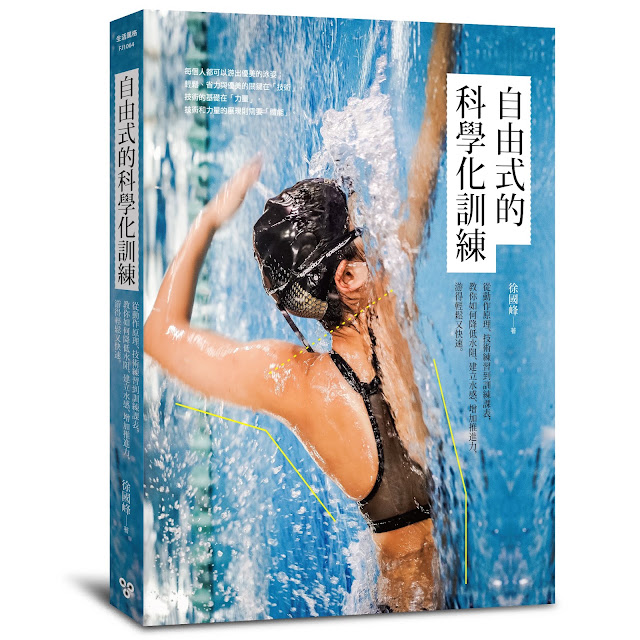

新書出版：《自由式的科學化訓練》

新書於三日前出版了，當時還在北京，未來得及第一時間看到書，但這幾日仍念茲在茲。每部作品都像自己的小孩，作品誕生時總時有一種既興奮又緊張的複雜心情……
這本書主要是為已經會游自由式的人而寫。如果還完全不會游自由式的人，這本書並不適合你。也就是說，這本書不適合從零開始的初學者，想「學會」游泳的話，應該請教練幫你；本書適合「已經會游自由式」，而且想學習游泳理論與訓練方法的人。因此在閱讀之前，你至少要能用自由式在泳池連續游四百公尺以上。「從完全不會游泳到會游泳」這件事對成人來說是很難只靠書本做到，想跨過旱鴨子的門檻，最好是在教練、友人或是影音教材等外在助力的輔助下比較容易達成。
這本書是想讓大家了解，只要努力且方法正確，每個人都可以游出優美的泳姿。而輕鬆、省力與優美的關鍵在「技術」，技術的基礎在「力量」，技術和力量的展現需要「體能」。
許多人在訓練游泳時會先練體能，但其實只要能減少水阻，速度自然會變快，游起來也會更輕鬆。第一章〈想進步從減少水阻開始〉就是從理論著手，讓你知道水阻的成因有哪些？以及有哪些訓練動作能改善泳姿，減少水阻。在沒有改善水阻的情況下努力提升力量與體能的結果就是愈游愈費力、愈沮喪，所以減少水阻這個目標是技術訓練中最重要的第一步。
第二章論及〈提升水感與速度的技巧〉。一般人直覺會認為想加速就使力向後推水，但用力推水就真能加速前進嗎？關於推進力的來源，歷來的游泳科學家們爭論了很久。在這一部分我們將討論加速度的來源？該如何加速？划手各階段的要領為何？打水的目的為何？水感是什麼？以及該如何訓練水感？
想要練就減少水阻與提升速度的技巧，必須要有穩定的核心以及用手臂支撐身體的力量。但力量是什麼？自由式的力量訓練又有何特別之處？該練什麼？第三章〈游泳的力量，該怎麼練？〉就在說明述幾個問題。
在瞭解了各項技術和力量的練法之後，再回到游泳表現的根本能力——「體能」。我們該如何從科學化的角度來進行體能的訓練？也就是說，如何定義自己五十、一百或兩百公尺的間歇該游多快比較適合自己。要確認泳速，首先要先知道當前的實力。第四章〈科學化訓練課表〉要引導讀者進行檢測，並透過測驗成績來找到對應的「泳力」以及對應的泳速區間。接著再綜合前面的所有內容，我設計了一份以水感和技術知覺開發為主軸的四週課表，並仔細說明這份課表裡的每一個元素、訓練流程與注意事項。
本書雖然是為已經會游泳的人而寫，教你如何用科學化的方式進行自主訓練。但幾乎每位游泳愛好者都會接到教游泳的任務，可能是自己、親戚或朋友的小孩，也可能是鄰居或是同事的請託。在過去連續十年的教泳過程中，深感「自己練」與「教別人練游泳」是兩種不同的能力。所以本書最後附上〈如何教別人游泳〉是為了協助已經會游泳卻還沒有教學經驗的你，在接到教學任務時該如何教起，並提供給你一些教學方向的建議。所謂教學相長，教學的過程中自己的泳技也會跟著進步，所以我每次教完後再游泳，水感都特別好。
全書從技術論起，接著談力量、體能，最後統整成一份訓練課表，有步驟地引領游泳愛好者進入自由式的科學化訓練理論與方法中。寫作的目標是使讀者更認識游泳，以及體會到更多游泳訓練的樂趣。
—————————
【本書目錄】
第一章：想進步從減少水阻開始
1.在水中必須先思考如何減少阻力
2.減少水阻的姿勢
3.換氣不是學會就好！
4.減少水阻的訓練方式
第二章：提升水感與速度的技巧
1.支撐與移動理論
2.水感的奧祕
3.使你游得更輕鬆有力的「轉肩技術」
4.划手的關鍵姿勢
5.划頻VS.划距
6.自由式打水的目的為何？
7.水感的訓練方式
第三章：游泳的力量，該怎麼練？
1.肌肉與體重之間的關係
2.重整優化：活動度是力量的根本
3.維持姿勢：維持部分身體穩定不動的能力
4.支撐力：強化上肢支撐體重的能力
5.轉換支撐：快速換手的能力
第四章：科學化訓練課表
1.訓練自己游得更快
2.游泳臨界速度
3.泳力表：確認適合自己訓練的泳速區間
4.四百公尺的訓練課表
附錄：如何教別人游泳？
1.如何教旱鴨子游泳？
2.如何教孩子游泳？
【後記】游泳的教與學
—————————
對這本書有興趣的朋友可以參考博客來上的介紹：
https://reurl.cc/KWg1p
想要了解更多的讀者可以來參加7/19的新書分享會：https://reurl.cc/1VRdW
對游泳等耐力訓練有問題想找人討論可前往「RQ自由式的科學化訓練討論區」：
https://reurl.cc/brpLv
想要親身體驗本書的訓練法與第四章的課表，可參加LAVA鐵人公司舉辦的「自由式游泳PB訓練班」：https://reurl.cc/4z9E3